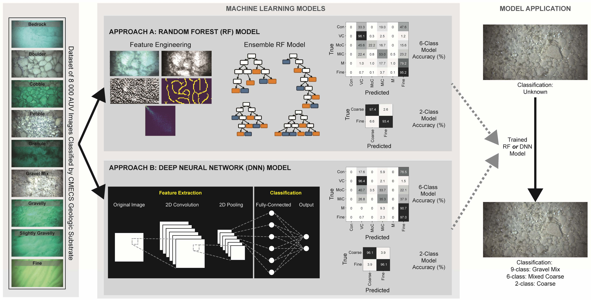

From 2020-2024 I worked with the USGS Great Lakes Science Center in Ann Arbor MI, and the Great Lakes Research Center at Michigan Tech. I worked with Dr. Peter Esselman and his group at the GLSC to learn about the benthic ecosystem of the Great Lakes, in particular invasive species. We used autonomous underwater vehicles and other advanced technology to collect high quality datasets which we then analyzed with machine learning methods.
